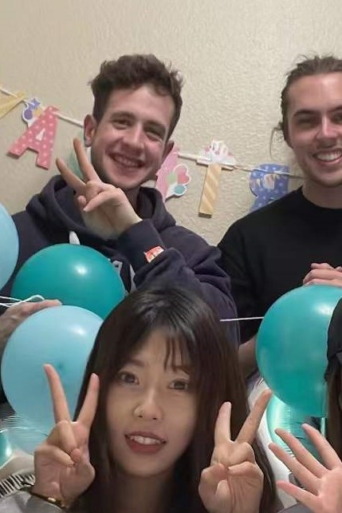

Our sustainable boba experience would have never turned out that well without the great project team behind it. A community of fate thrown together based on their differing backgrounds. A big warm thank you to Rhea (Rui) Huang and Alex Simpson for being awesome teammates.
Rhea, a trained landscape designer did an awesome job on complementing the group's perspectives and stopped Alex and me when we were chatting away, getting lost in some idea. With her detail-oriented approach, she added a great look to all of our deliverables and oftentime contributed the one crucial missing piece of information to our discussions.
Alex, a mathematician at heart, always made sure we keep our logic reasonable and added many good ideas in our brainstorming sessions. The fact that he is a native English speaker always helped in writing down what Rhea and I could not phrase. I can proudly say that we did not only work well together, 521 also made us great friends.
Scroll down to learn more about my skills and responsibilities.

I majored in Economics and have collected a lot of work experience in the field of Data Science over the past years. Additionally, I have collected a considerable amount of leadership experience in the Swiss Army and have often acted as a project manager ever since. I think I usually try to approach all my projects in a structured manner and I did the same with our 521 project. As I did not want any hierarchies to develop I tried not to start "managing" the group but simply imposing a little bit of structure. I am a big fan of meetings that start on time and that have a cap so that all of the meeting time is used productively. Additionally, I tried to make sure that we assign responsibilities we could keep each other accountable for. Beyond that, I often gave our presentations and documents the final touch and made sure that all work is split equally.